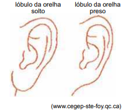

Você sabia que a capacidade de dobrar a língua em formato de "U" (formato de canudo) é uma habilidade motora que cerca de 65% a 81% das pessoas possuem? É frequentemente associada a um gene dominante, mas a capacidade também depende da flexibilidade muscular e força da língua.
Por que só algumas pessoas conseguem dobrar a língua?
A capacidade de dobrar a língua em "U" é uma característica física, muitas vezes atribuída a um gene dominante, mas estudos indicam que é influenciada por múltiplos fatores genéticos e anatômicos, como a flexibilidade muscular.
Gêmeos e a Ciência
Estudos posteriores com gêmeos idênticos mostraram que nem sempre ambos conseguem dobrar a língua, o que desafia a teoria puramente genética.
Mito ou Verdade?
É verdade!
A capacidade de dobrar a língua em forma de "U" é uma característica física, mas é um mito que seja 100% determinada por um único gene dominante ou que seja impossível aprender.
Outros traços que as pessoas costumam observar:
Lóbulo da orelha preso ou solto

Intolerância à lactose:
A hipolactasia do adulto é considerada um traço autossômico recessivo.
Isso significa que a pessoa precisa herdar dois genes com a característica de "não-persistência", um de cada progenitor.
A psicologia revela o que a capacidade de dobrar a língua diz sobre o seu corpo e a sua personalidade.
Genética e Populações
A biologia contemporânea aponta que essa habilidade envolve múltiplos fatores anatômicos, e não uma simples herança hereditária. O formato da boca e os hábitos cultivados durante a infância alteram drasticamente o resultado final.